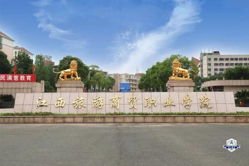
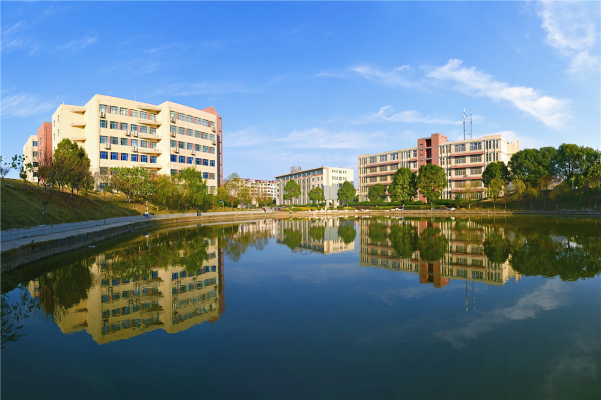

学校背景
- 江西旅游商贸职业学院是一所位于中国江西省南昌市的公办全日制普通高等院校 。
- 历史沿革：2002年4月经江西省人民政府批准组建，其前身是1964年创建的江西省商业学校、江西省核工业技校和1987年成立的江西省旅游学校 。
- 院系专业：设有旅游、经济管理、会计金融、国际商务、机电信息工程、艺术设计、体育等7个分院，开设50多个专业，如酒店管理与数字化运营、旅游管理、现代物流管理、电子商务等 。
- 教学建设：拥有国家级骨干专业5个，教育部现代学徒制试点专业3个，国家级职业教育教师教学创新团队2个等。建有8大校内实训基地，其中4个为国家级实训基地，还有1个国家级协同创新中心 。
- 师资力量：有各类在校生20000余人，教职员工1100余人，专任教师900余人，“双师型”教师比例达68% 。
- 合作交流：与英国南兰克郡学院、美国夏威夷大学卡比奥拉尼学院开展联合办学 。
- 校园环境：位于南昌经济技术开发区丁香路1号，占地面积1068亩，建筑面积近40万平方米 。
学校荣誉

-
2005年3月
被南昌市卫生监督所授予卫生先进单位。
2005年
年度人口与计划生育先进单位。
2006年6月
诚信和谐创业先进单位
2006年
年度人口与计划生育先进单位。
2006年9月
获评为诚信和谐创业先进单位。 [4]
2007年1月
被南昌市园林绿化局评为2006年度南昌市城市绿化工作“园林单位”。
2007年3月
在教育部关工委等举办的第三届全国语文规范化知识大赛中获组织奖。
2007年5月
学院经济管理系被中华全国供销总社授予国家级“青年文明号”荣誉称号。 [4]
2007年9月
被省教育厅、共青团省委评为高校先进集体。
2009年
江西旅游商贸职业学院是“创新发展年”活动先进单位、图书馆被评为全省优秀图书馆
2007-2009年
年度全省就业工作优秀，并被江西省教育厅评定为“江西省普通高校就业工作先进单位”
2021年6月
江西旅游商贸职业学院党委被确定为“江西省直先进基层党组织”拟表彰对象。
